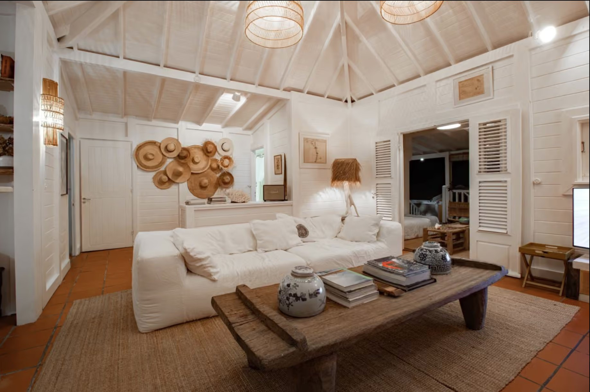

Villa La Vanille
Villa créole, piscine et vue sur le canal de la Dominique.
Voir les disponibilitésDeux maisons créoles, un jardin tropical et la mer pour seul horizon. Ici, les journées se comptent en baignades et en couchers de soleil.
- 12voyageurs
- 5chambres
- 5salles de bain
- 2 000m² de jardin
La villa

La piscine
Une piscine d'eau salée chauffée, face à la mer. Son solarium en bois, ses bains de soleil et le jardin tropical tout autour en font le cœur de la villa, du matin jusqu'au coucher du soleil.

La galerie
Une galerie de plus de 80 m² ouverte sur le jardin tropical, avec vue sur l'océan et l'île de la Dominique. On y prend le petit-déjeuner, on y lit à l'ombre, on y fait la sieste dans le hamac.


Le salon cathédrale
Sous une haute charpente en bois blanc, le salon s'ouvre par de grandes portes à persiennes sur la galerie et la mer. Canapé en lin, suspensions en rotin, tomettes et objets chinés : un intérieur créole lumineux, frais et apaisant.

La grande table
Sous la galerie, une salle à manger pour douze personnes. Le soir, les suspensions en rotin et les photophores s'allument pour de longs dîners face au jardin.
Les cuisines
Une cuisine intérieure équipée, ouverte sur la galerie, et une cuisine extérieure avec barbecue au gaz et plancha.
Les chambres
Cinq chambres climatisées, réparties entre deux maisons. Chacun trouve son espace et son calme.
La maison principale
La maison de la piscine
Une chambre de quatre lits pour enfants est disponible sur demande, avec supplément.
Prestations
La piscine d'eau salée est chauffée et regarde la mer. Le reste a été pensé pour que vous n'ayez à vous occuper de rien.
- Piscine d'eau salée chauffée, vue mer
- Cuisine intérieure équipée et cuisine d'été
- Barbecue au gaz et plancha
- Climatisation dans toutes les chambres
- Wi-Fi et espace de travail
- Jardinier et pisciniste chaque semaine
Une conciergerie à votre service
Que vous souhaitiez réserver vos billets de bateau, une voiture de location, un taxi, un chef à domicile, des activités, un massage, une sortie en mer ou simplement être conseillé pour organiser votre séjour, Fabie est là pour vous accompagner.
En plus de ses précieux conseils, elle vous fera bénéficier de tarifs préférentiels et de codes promo exclusifs MGVIP auprès de nombreux partenaires locaux.
Galerie
Marie-Galante, l'île aux cent moulins
Ronde comme une galette, posée sur une mer turquoise, Marie-Galante a gardé ce que les Antilles ont parfois perdu : des plages sans foule, des champs de canne à perte de vue et une douceur de vivre authentique. Voici ce qui vous attend, à quelques minutes de la villa.
Préparer votre séjour
Venir à Marie-Galante
En bateau depuis Pointe-à-Pitre jusqu'au port de Grand-Bourg, en une heure environ. Ou en petit avion jusqu'à l'aérodrome de l'île. La villa est à 3 km du bourg et du port.
Se déplacer sur l'île
Une voiture de location est conseillée pour profiter des plages et des sites. L'île est petite : tout est à moins de 30 minutes en voiture.
Quand venir
Toute l'année. La saison sèche, de décembre à mai, est la plus prisée. Le festival Terre de Blues a lieu chaque année au printemps.
Notre conciergerie vous aide
Billets de bateau, voiture de location, chef à domicile, sorties en mer : Fabie organise tout et vous fait bénéficier des codes promo MGVIP auprès de ses partenaires.
Ils ont séjourné ici
4,94
sur 5, d'après 17 avis Airbnb. Coup de cœur voyageurs.
- 4,8Propreté
- 5,0Précision
- 5,0Arrivée
- 4,9Communication
- 5,0Emplacement
- 4,9Qualité-prix
Modalités et tarifs
Le prix dépend du nombre de chambres ouvertes. Tarifs hors périodes de fêtes et Terre de Blues.
| Option | Prix / nuit | Prix / semaine |
|---|---|---|
| 1 chambre | 250 € | 1 750 € |
| 2 chambres | 300 € | 2 100 € |
| 3 chambres | 350 € | 2 450 € |
| 4 chambres | 400 € | 2 800 € |
| 5 chambres | 475 € | 3 325 € |
Conditions
- Séjour minimum
- 3 nuits
- Arrivée
- À partir de 18 h
- Départ
- Avant 10 h
- Frais de service
- 290 €
- Taxe de séjour
- 2 € par personne et par nuitLe montant de la taxe de séjour est calculé selon les modalités fournies par les autorités locales. Cette somme est une taxe, elle est donc identique quelle que soit la provenance de la réservation.
- Règlement
- Par carte bancaire : 50 % à la réservation, le solde 30 jours avant l'arrivée
- Caution
- 1 500 €
- Assurance annulation
- À partir de 3 %
Bon à savoir
- Les animaux ne sont pas admis.
- Pas de fêtes. Les dîners entre amis sont les bienvenus.
- La piscine n'est pas surveillée.
- La villa n'est pas adaptée aux tout-petits.
Réserver
Les réservations sont gérées par notre conciergerie. Consultez les disponibilités et réservez votre séjour en ligne.
Voir le calendrier et réserver